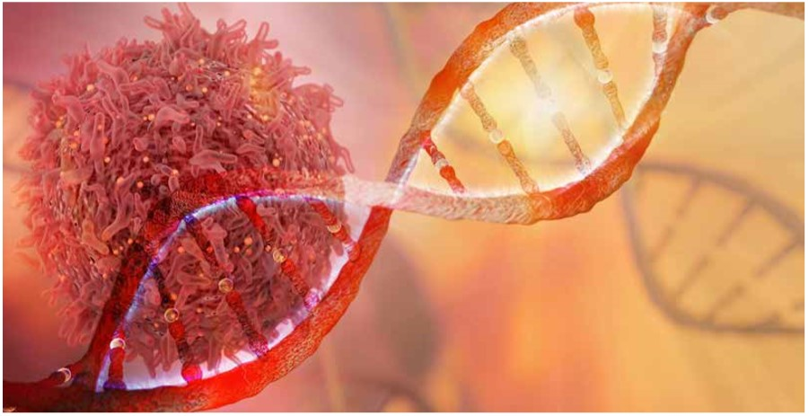

Snapshots
Case Studies
Expert Views
Healthcare
Education
Events
Technology


Liquid Biopsy:
a game changer


cover story


24/09/18
his is the age of disruptions. While the digital technology-enabled disruptions have already changed our life in many ways in the utility space, here is a medical technology that awaits a much bigger revolution in the healthcare space.
T
With several clinical and predictive applications that could disrupt the way diseases are tracked and treated today, the technology of liquid biopsy is expected to be a game changer. While this new biomarker test traverses existing limitations of a needle biopsy, the debate over its potential to completely replace the latter is brewing up among the fraternity.
The accuracy of detecting circulating tumour DNA in the blood is comparable to the gold standard tumour tissue biopsy. But the unfolding potential makes this less-invasive tool traverse far beyond cancer diagnosis and treatment
Since biopsies have been the gold standard in cancer tracking, this non-invasive technology that deals with analysis of circulating tumour cells (CTC) and ctDNA from the peripheral blood could play a critical role in targeted cancer therapy, including diagnosis, prognosis and reassessment.
“The tumour tissue is usually not an issue for early, resectable and approachable cancers. However, there are some inherent deficiencies with (tissue) biopsies in inaccessible or advanced malignancies. Modern personalised cancer medicine is largely dependent on finding molecular targets,” states a recent review published in International Journal of Molecular & Immuno Oncology, authored by Mudhasir Ahmad from Department of Medical Oncology at HCG Cancer Centre, Ghaziabad, and Randeep Singh from Artemis Hospitals, Gurgoan.
“As this technology evolves, it may prove to be a critical component of personalised medicine in this modern era of diagnostics,” argues Ahmad and Randeep.
Another key relevance of liquid biopsy is in terms of difficulties in multiple biopsies and patient comfort.
According to JMIO review, intratumoral heterogeneity is an ‘enemy’ of single biopsies, when they showed that gene expression signatures differed significantly between biopsies taken from different sites of the primary tumour as well as those from different metastases. Multiple biopsies take intra-and intertumour heterogeneity into consideration but may be difficult, risky, painful, and can potentially cause tumour seeding and fistulas, it adds.
But the current challenges with liquid biopsy include false positive results, though rare in number of incidents, and assay sensitivity and specificity. Therefore, many clinicians believe that several hurdles still exists such as lack of consensus in technical approaches of choice, preferable sample type, storage conditions, candidate molecules, and suitable detection technique among others.
“For anything new, there will be a resistance as human mind is programmed in such way that first to reject the hypotheses and then look at the data and accept it,” Dr Govind Babu, Associate Professor at Kidwai Memorial Institute of Oncology, Bengaluru, analyses the current criticism. “It is established that it (liquid biopsy) is important for lung cancer, where you can’t reach the tissue. All world guidelines have already accepted it,” he said


liquid biopsy:
Advantages

Ease of diagnosis: Liquid biopsies avoid invasive procedures, repeated biopsies and overcome the limitation of lacking enough tissue. It is helpful in inaccessible tumours and in patients who are unfit/or unwilling for invasive biopsy

Tumour heterogeneity: It gives more representative information of the tumour and has a potential to detect more targetable/actionable genetic aberrations.

Prognostication: The amount of ctDNA and the mutational load as well as type of mutations fosters prognostication at the time of diagnosis

Tumour heterogeneity: It gives more representative information of the tumour and has a potential to detect more targetable/actionable genetic aberrations.
Screening ctDNA
It’s just a blood sampling, thanks to the advanced genomics. Unlike traditional biopsy, which is an invasive procedure to obtain a sample of the tumour tissue that is not always feasible, liquid biopsy allows to identify patients whose tumours have specific mutations in the minimally invasive way. It is also less time-consuming. It is possible because tumour cells (and their DNA) are released into the circulation and circulating-free tumour DNA (cfDNA) could be isolated. Finally, the molecular test can be obtained. This is an alternative way to detect mutation and also a better alternative to gain a sample for testing in patients who previously could not be tested at all. The US FDA approved the first liquid biopsy test in 2016. Typically, the tumour DNA enters circulation from apoptosis and necrosis of tumour cells at the site of origin with a small contribution from the dying CTCs. Similarly, circulating tumour DNA (ctDNA) is also present in blood which can be differentiated from non-tumour cfDNA by their mutation profile and specific somatic mutations.
The proportion of ctDNA to the total blood free DNA differs according to the location of cancer (low in Central Nervous System tumours), stage of cancer (higher in advanced cancers), type of cancers (low in mucinous cancers), and detection methods (methods used and genetic aberration identifiers used). ctDNA is identified and quantified using appropriate targets such as KRAS mutation or PIK3CA mutation and various other technologies.
In addition to ctDNA, tumours also release CTCs into blood, which can be enriched using various technologies for detecting tumor cells (physical and biological properties such as size and expression of surface molecules, epithelial cell adhesion molecule (EPCAM). The migration (epithelial-mesenchymal transition, EMT) of CTCs from tissue of origin to blood and peripheral tissues is governed by the biological characteristics of the CTCs as well as the gradient of special chemokines, such as CXCR4 and CCR4. CTCs also have potentially same scope in cancer management as ctDNA. ctDNA has superseded the clinical advantage because of the sheer information that the ctDNA can provide through next generation sequencing (NGS) in addition to the diagnosis, prognosis, and surveillance.


liquid biopsy:
Challenges
The tumour associated genetic aberrations can be lost or gained over the monitoring period.
The tumour associated genetic aberrations can be lost or gained in response to treatment
The CTCs may detect aberration limited to clonal subpopulation
Identification of tumour DNA requires founder genetic aberrations (which are not lost during the progress of cancer) such as APC in colorectal cancer. These aberrations should not be affected by the anti-cancer therapy (passive mutations)

Standardization of the testing methods

Availability of standardised tests

Clinical trials of these tests with survival as endpoints
Clinical application
Screening and early cancer detection is claimed to be one of the biggest advantages of liquid biopsy. The JMIO review re-emphasises that the existing options for screening common cancers in high-risk individuals are grossly inadequate. This has naturally prompted, search for newer technologies. Some of the earlier studies had mentioned role of CTCs in the early detection of lung cancer in chronic airway disease patients.
Another study showed 50 per cent of stage-I lung cancer patients have ctDNA. Similar studies are also going on in patients with inflammatory bowel disease. ctDNA can be detected in up to 73 per cent of the patients with localised cancer, often without simultaneous CTC being present.
Experts are of the view that the role of CTCs and ctDNA detection is promising but still in need of significant improvements in specificity and sensitivity. Hence, the clinical application is not fully confirmed at present except certain special circumstances, they say.
However, Dr Kumar Prabhash, professor, Medical Oncology at Tata Memorial Hospital, and editor-in-chief of IJMIO, confirms that application of liquid biopsy in detection and reassessment in lung cancer is proven without doubt. “Since lung cancer is inaccessible for needle biopsy, it becomes all the more relevant,” he added.
Similarly, other inaccessible tumours such as deep pelvic, pancreatic, and bone tumours can also be diagnosed with CTCs or ctDNA, predict experts. There are cases where synchronous versus metastatic malignancies have been identified by detecting different set of specific mutation.
However, Dr Narayanankutty Warrier, Medical Director at MVR Cancer Centre and Research Institute, said that in the case of accessible cancers, tissue biopsy is still preferred as it always gives better results.

Key in precision medicine
Since detection of resistance mechanisms is key in precision medicine, analysis of T790M by next generation sequencing of ctDNA in EGFR amplified NSCLC patient’s resistance to 1st line TKI, helps the doctors to decide for further treatment.
Similarly, tracking of mutations by liquid biopsy such as KRAS/ NRAS in colon cancer, PIK3CA in NSCLC, BRAF in melanoma and resistant ALK in NSCLC are currently under trials. It also has a role in tracking clonal evolution and drug responses to targeted
agents especially by following mutation such as KRAS, NRAS, BRAF, TP53, and PIK3CA.
“In targeted cancer therapy, reassessment is very important and it is difficult to have multiple tissue biopsies. So I would consider liquid biopsy as complementary with the existing techniques even in the accessible cancers,” said Dr BS Ajaikumar, chairman and CEO of oncology speciality chain Healthcare Global Enterprises.
Therapeutic decision making
Clinical trials have proved the benefits of liquid biopsy in taking therapeutic decisions. Earlier trials had introduced the CTC measurements before and after first cycle of chemotherapy and randomised patients to stay on the same chemotherapy or switching to another therapy. These trials have also confirmed the prognostic significance of CTCs in metastatic breast cancer patients.
There are also studies in progress to evaluate the role of CTCs in identifying hormone positive metastatic breast cancer patients who would benefit by early chemotherapy in comparison with hormonal therapy. Also the use of ctDNA has been successfully shown to predict the clinical benefit of erlotinib in patients with EGFR mutations detected on ctDNA leading to its FDA approval using the companion COBAS EGFR mutation test.
Share this story


Case Studies
Diagonostics
Diseases
Education
Events
Devices
CME
Interviews

About Us
Videos
Articles
Blog
Subscribe to our mailing list
©All rights reserved, 2018
Connect On:


Subscribe


Snapshots

Topics

Blog

Events


Case Studies

Regulations and Policies
Drug Approvals
Drug Packs
Diagonostics
Devices
Hospitals
Surgical Innovations
Pharma World
Vaccines
Education/CME
Articles

Videos


Expert's View
Entreprenuership and management
Reader's View
Emerging Science

Letters

Straight Talk
Writer's Column
Interview

Alternate Medicine


From the conference

Conference Calendar